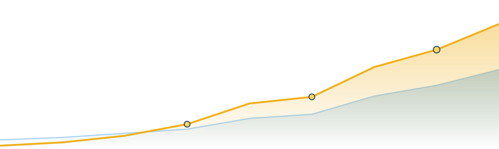

Search is changing faster than at any point since Google launched. This guide exists to turn that change into an advantage for owner-operated and local businesses, before competitors learn how AI search works.
A complete, plain-English playbook: how search evolved into answers, the data behind the shift, the three layers of modern visibility (SEO, AEO, GEO), a six-layer visibility stack, schema and crawler controls, the new metrics that matter, and a 30-day action plan you can run next week.
Small-business owners, marketers, real-estate professionals, and local-service operators who want practical execution, not theoretical AI hype.
Each chapter ends with Key Takeaways or a Checklist. Look for the gold Momentum Edge panels, they show where our visual, local, and search work directly produces the proof AI engines reward.
We don't just write about AI search. Every virtual tour, photo shoot, review, and service page we produce becomes a structured, citable proof asset, exactly the raw material AI systems retrieve and recommend.
Search is moving from lists of links toward generated answers, follow-up conversations, local recommendations, and AI agents that help people take action. That does not make SEO irrelevant, it makes the old job too small.
Businesses still need crawlable websites, useful content, clean local data, strong reputation signals, and media that proves they are real. What changed is that those signals now have to be effortless for both people and AI systems to understand, retrieve, and trust.
When a buyer asks an AI assistant "who should I trust for this service near me?", the system doesn't return ten blue links. It synthesizes an answer from the sources it understands best, and recommends a short list. The business that is clearest, most consistent, and most provable wins the recommendation.
For small businesses and local organizations, the opportunity is practical and time-sensitive: become the clearest, most trusted, most useful source in your category before competitors learn how AI search works.
That is the entire thesis of this guide. The rest is execution.
Search used to reward matching pages to keywords. Then it matured into semantic relevance, intent, quality, local context, and entity understanding. AI-powered search is the next stage, and it behaves differently.
Instead of only ranking pages, modern systems retrieve information, synthesize an answer, cite or link sources, and invite follow-up questions. Google describes the core techniques openly: retrieval-augmented generation, and query fan-out, where one user question silently triggers many related searches behind the scenes.
The practical implication is simple but demanding. A business must now be understandable across its whole footprint: website, Google Business Profile, service pages, reviews, photos, videos, structured data, directories, and third-party proof. A gap anywhere is a gap the AI fills with a competitor.
This is not a forecast anymore. It's a measurable change in how billions of people find answers. A snapshot of where things stand as of mid-2026.
Impressions are rising while clicks compress. BrightEdge measured Google impressions up roughly 49% year-over-year even as click-through fell about 30%. More people are seeing answers; fewer are clicking ten links to find them. Visibility is increasingly won inside the answer.
AI search changes the business impact of visibility. A customer may compare providers, check reputation, ask follow-up questions, and decide to book, all before ever browsing your website.
Industry and research signals point the same way: search behavior is shifting toward answer engines, AI summaries reduce traditional clicking, and impressions can rise even while click-through rates fall. The risk isn't that you stop ranking. It's that you rank, get summarized, and never get the click, while the AI recommends whoever it understood and trusted most.
When the buyer's decision moves upstream into the answer, your proof has to be there too. That's why we attach tours, photos, reviews, and clear service data to the exact pages and profiles where AI forms its recommendation, so the influence happens whether or not the click does.
These are not three disconnected acronyms competing for budget. They are three layers of the same visibility system, and Google itself says AEO and GEO, for Google Search, still sit inside SEO.
| Layer | Plain-English meaning | Primary goal |
|---|---|---|
| SEO | Make your business discoverable in search engines. | Rank, earn clicks, and build a durable foundation. |
| AEO | Make your content answer-ready. | Be selected, summarized, or cited when people ask direct questions. |
| GEO | Make your business understandable to generative engines. | Show up in synthesized AI answers and recommendations. |
Crawlable, fast, well-structured pages with clear topics and clean technical health. Nothing downstream works without it.
Content shaped around real buyer questions, with the answer stated first, in the language people actually use.
Clear entities, consistent descriptions, and provable expertise so generative engines can understand, summarize, and cite you accurately. The original GEO research (Aggarwal et al., KDD 2024) found that simply citing sources, adding statistics, and including quotations can lift a source's visibility in generative answers by up to ~40%.
The winning strategy is not one tactic: it's a stack of signals that reinforce each other. Read it bottom-up: each layer makes the one above it more credible to people and machines alike.
Momentum 360 works across this entire stack by design: local SEO and Google Business Profile optimization, visual content and virtual tours, web development, paid media, reporting, and lead conversion. Most agencies own one or two layers. The advantage is owning the whole column so the signals actually reinforce each other.
AI search still depends on discoverable, crawlable, indexable content. If a website is unclear, slow, thin, duplicated, or hard to crawl, AI-powered search has less reliable material to retrieve, and reaches for a competitor instead.
A strong foundation starts with clean service pages, location relevance, sensible internal links, accurate metadata, clear headings, structured data where useful, mobile performance, and Search Console visibility.
For local organizations, that foundation also includes consistent name, address, phone, hours, categories, and services, plus review signals, across every important platform. Inconsistency is the single most common, most fixable reason AI gets a business wrong.
Answer Engine Optimization is about giving buyers direct, trustworthy answers in the language they actually use, and structuring those answers so a machine can lift them cleanly into a response.
Small businesses lose AI-search visibility when their websites never answer the questions customers ask before buying: pricing ranges, timelines, service area, qualifications, process, guarantees, comparisons, and what happens after a form is submitted. An answer-ready content library turns those questions into useful pages and sections, written like a capable expert explaining the decision, not a keyword page trying to manipulate a result.
Generative Engine Optimization focuses on whether AI systems can understand, summarize, and cite your business accurately. The peer-reviewed GEO research formalized the challenge, and, helpfully, the highest-impact moves are also the most legitimate.
Generative engines synthesize answers from many sources at once, which creates a new visibility problem: you're competing to be understood and trusted, not just to rank. In practice, GEO favors clear entities, consistent descriptions, original expertise, real proof, structured service information, and content that adds value beyond commodity summaries.
The GEO study tested nine tactics. Three stood out, and none of them are tricks. They simply make content more trustworthy:
Notably, the same research found keyword stuffing did not help, and sometimes hurt. The honest tactics win.
Here's the finding reshaping how off-site strategy works in the AI era: brand mentions now appear to matter more than backlinks. What people say about you across the web (even without a link) is becoming the strongest signal of whether AI engines surface you.
A 2025 Ahrefs analysis of ~75,000 brands found that branded web mentions correlated with appearing in Google AI Overviews far more strongly than total backlinks did, roughly a 3-to-1 difference. The takeaway for a small business isn't "stop earning links." It's "start earning conversations."
Generative engines also lean heavily on a handful of high-trust community and reference sources (Reddit, YouTube, Wikipedia, LinkedIn, Quora, and reputable "best of" lists) when they assemble recommendations. Being present and well-regarded in those places puts you in the citation pool.
sameAs profiles (LinkedIn, socials, Wikidata where applicable) so the engine merges every reference into one confident entity.Earning mentions takes real proof worth talking about. Momentum 360's tours, photography, and case-study assets give press, partners, and customers something concrete to reference, turning your work into the kind of off-site signal AI engines reward.
Structured data is how you hand an AI system the facts about your business in a format it cannot misread. It doesn't guarantee a citation, but it removes ambiguity, and ambiguity is what loses you the recommendation.
An important clarification first: Google states there is no special schema required to appear in AI Overviews or AI Mode. So why bother? Because well-formed schema still earns rich results and, more importantly for AI, disambiguates your entity: it tells every engine, in plain machine-readable terms, exactly who you are and what you offer. A handful of types carry most of the weight.
| Schema type | What it clarifies | Note |
|---|---|---|
| LocalBusiness | Name, address, phone, hours, geo, price range | Use the most specific subtype (e.g. Plumber) |
| Organization | Brand identity, logo, and sameAs profile links | The entity anchor, one stable @id site-wide |
| Service | Each service, area served, and provider | Reference the Organization @id |
| FAQPage | Direct question-and-answer pairs | Lost rich snippets, but still parsed, keep it |
| Review / Rating | Proof on Products, Events, Courses, etc. | Can't self-rate your own business for stars |
| BreadcrumbList | Site structure and page relationships | Match the visible trail |
The #1 local schema mistake: marking up your own reviews on your LocalBusiness page to earn star ratings. Google has treated that as self-serving and ineligible since 2019. Collect reviews on Google and third-party platforms instead.
llms.txt, or special AI schema. As Google's John Mueller put it, llms.txt is "comparable to the keywords meta tag", i.e., not used.We pair structured data with structured proof. A correctly marked-up Service page backed by a virtual tour, real photos, and third-party reviews gives AI engines a complete, verifiable entity, the kind they reach for first.
For small businesses, the highest-value AI-search moments stay stubbornly local: "best contractor near me," "tour a venue before booking," "who can fix this today," "which provider has strong reviews in my area?"
Google specifically points to Google Business Profiles for local business visibility in generative AI responses. That makes profile completeness, categories, reviews, photos, services, and posts more important, not less. Survey data backs the behavior shift, too: roughly 1 in 4 consumers reported using an AI tool to find a local business in a recent week, a share that climbs sharply among younger buyers.
As a Google Trusted Photographer Agency, Momentum 360's local work connects straight to this shift: Google Business Profile optimization, listings management, reviews, Google Street View, photography, and virtual tours all build the evidence layer a local buyer (and an AI) needs to choose you.
AI search doesn't replace trust. It compresses trust evaluation into fewer moments. A business with clear reviews, visible proof, complete policies, and recognizable third-party validation simply gives AI systems and buyers more evidence to work with.
Trust should be visible exactly where decisions happen: near pricing explanations, booking forms, service descriptions, location pages, and conversion calls-to-action, not quarantined on an "About" page nobody reads.
AI search is not only text. Google explicitly notes that high-quality images and video create additional opportunities for visibility in generative AI search experiences. That's where Momentum 360's original strength becomes a strategic advantage.
Virtual tours, photography, video, drone work, 3D renderings, project galleries, and Google Street View aren't just creative assets. They're proof assets. For small businesses, visual proof answers questions a paragraph can't: What does the space look like? Is this business real? Can I trust the team? What will the experience feel like before I visit, call, or book?
The market data is blunt about the payoff. Listings and properties with immersive 3D tours consistently outperform. Matterport reports properties can earn meaningfully more qualified leads and hold visitor attention several times longer than static listings. In an answer-driven world, that engagement is also a trust signal AI can read.
AI-search visibility is partly a technical access decision. You should know which bots can reach your content, and what tradeoff you're making when you allow or block each one.
The key distinction is search inclusion vs. model training. OpenAI separates OAI-SearchBot (surfaces you in ChatGPT answers) from GPTBot (model training) and ChatGPT-User (live user fetches). Anthropic splits Claude-SearchBot from ClaudeBot the same way. One nuance trips up many sites: Google's Google-Extended token opts you out of Gemini training and grounding, but it does not remove you from AI Overviews or AI Mode, which ride the normal Googlebot index. Block the wrong token and you quietly disappear from the answers you want to win.
| Crawler | Purpose | Typical stance |
|---|---|---|
| Googlebot | Search index + AI Overviews/AI Mode | Allow |
| Google-Extended | Gemini training/grounding only | Your choice |
| OAI-SearchBot | ChatGPT search citations | Allow |
| GPTBot / ClaudeBot | OpenAI / Anthropic model training | Your choice |
| Claude-SearchBot | Anthropic search indexing | Allow |
| PerplexityBot | Perplexity answer engine | Allow |
The load-bearing control is nosnippet. To stay in Search but keep a page out of AI summaries, that's the directive (with max-snippet / data-nosnippet for finer control), not Google-Extended, and not llms.txt.
Traditional reporting over-weighted rankings and sessions. Those still matter, but AI search demands a broader scorecard that connects discovery, trust, and conversion.
In June 2026, Google launched dedicated Search Generative AI performance reports in Search Console, the first standalone view of how often your pages appear inside AI Overviews and AI Mode. (Today it shows impressions only, with a phased rollout, but it confirms the direction of travel.) Google Analytics also added a native "AI Assistant" channel in 2026, so referrals from ChatGPT, Gemini, and Claude finally show up as their own source. Connect both to the outcomes that pay the bills: calls, bookings, form fills, qualified leads, and revenue.
| Old KPI | AI-era companion KPI | Why it matters |
|---|---|---|
| Rankings | AI Share of Voice | How often you're mentioned vs. competitors is the new #1. |
| Sessions | Qualified actions | Traffic only matters if it produces calls, bookings, and leads. |
| Keyword volume | Question demand | AI search begins with buyer questions and follow-ups. |
| Page views | Assisted conversion | AI visibility can influence buyers before they ever visit. |
| Traffic source | AI referral share | ChatGPT/Perplexity/Gemini referrals are a new, trackable channel. |
And here's the encouraging part: AI referrals are low in volume but unusually high in intent. Similarweb's 2025 data put the conversion rate of AI-referred visitors at roughly double that of traditional organic traffic, fewer clicks, but warmer, more decision-ready buyers.
Momentum 360 already speaks this language through reporting tied to real business numbers, rank movement, lead volume, and revenue, not vanity metrics. The healthiest dashboard connects discovery, trust, and conversion in one view.
The businesses that win AI search won't wait for a perfect playbook. They'll build a focused operating rhythm (audit, fix, publish, measure) in weekly cycles.
Score each item from 0 (not started) to 2 (fully in place). Total it honestly: the result tells you where to spend the next 30 days.
| Core service pages are crawlable, clear, and current. | 0 1 2 |
| Google Business Profile has complete categories, services, hours, photos, and posts. | 0 1 2 |
| The website answers pricing, process, timing, location, and comparison questions. | 0 1 2 |
| Reviews and testimonials are recent, specific, and visible near conversion points. | 0 1 2 |
| Photos, videos, tours, and project galleries support the key buying decisions. | 0 1 2 |
| Structured data and metadata are implemented where useful. | 0 1 2 |
| Important pages have clear CTAs, fast contact paths, and lead tracking. | 0 1 2 |
| Search Console and conversion reporting are reviewed monthly. | 0 1 2 |
| Robots.txt and noindex rules are intentional, not accidental. | 0 1 2 |
| The team has a 30-day plan for content, proof, local updates, and measurement. | 0 1 2 |
Momentum 360 doesn't treat AEO and GEO as buzzwords. The existing service model already touches every signal AI search needs, which makes us a natural partner for businesses that need practical execution, not theoretical AI advice.
Photos, video, virtual tours, drone, 3D renderings, and case-study assets.
SEO, AI SEO, Google Business Profile, listings, service pages, topic planning, and reporting.
Clear offers, booking paths, lead tracking, paid-media learning, and follow-up.
Google Trusted Photographer Agency & Matterport Service Provider.
We'll review how AI search currently sees your business (crawlability, Google Business Profile, answer content, proof, and conversion paths) and hand you a prioritized 30-day plan.
Momentum 360 logo and brand colors (blue #0857A8, gold #F0B018) were sampled from the official Momentum 360 logo asset. Third-party statistics are attributed to their original publishers; figures from secondary coverage should be confirmed against the primary source before external publication. Methodologies for AI-Overview prevalence and click-through impact differ between studies and are not directly comparable. Third-party names and marks (Google, OpenAI, Matterport, and others) appear only as small nominative/educational references and imply no affiliation, sponsorship, or endorsement.
The era of AI search rewards the clearest, most provable business in every category. Let's make that yours.